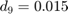
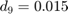
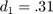
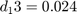

Práctica 5: Series de Fourier en tiempo continuo
integrantes: Gómmez García Carlos Eduardo, Gómez Serrano Eric, Contreras Porfirio Alejandro
Contents
Objetivos
- Realizar graficas de series de Fourier exponenciales y trigonométricas en tiempo continuo
- Manipulacion de instrucciones en MATLAB
- Calculo númerico de los coeficientes de Fourier
Introducción
Podemos calcular Dn numéricamente usando el DFT (la transformada discreta de Fourier), que usa las muestras de una señal periódica x (t) durante un período. El intervalo de muestreo es T segundos. Por lo tanto, hay N0 = T0 / T número de muestras en un período T0. Para encontrar la relación entre Dn y las muestras de x (t)
Donde x (kT) es la késima muestra de x (t) y
En la práctica, es imposible hacer que T → 0 al calcular el lado derecho de la ecuación. Podemos hacer que T sea pequeño, pero no cero, lo que hacer que los datos aumenten sin límite. Por lo tanto, ignoraremos el límite de T en Eq con la comprensión implícita de que T es razonablemente pequeño. T distinto de cero producirá algún error de cálculo, que es inevitable en cualquier evaluación numérica de una integral. los El error resultante de T distinto de cero se denomina error de alias.

Ahora, de la ecuación, . Por lo tanto, y de la ecuación, se deduce que
La propiedad de periodicidad significa que más allá de  , los coeficientes representan los valores para n negativo. Por ejemplo, cuando
, los coeficientes representan los valores para n negativo. Por ejemplo, cuando  . El ciclo se repite nuevamente desde n = 32 en adelante.
. El ciclo se repite nuevamente desde n = 32 en adelante.
Desarrollo
Estos ejemplos se pueden encontrar en el libro B P Lathi - Linear systems and signals-Oxford University Press (2005) en el capitulo 6 que consisten en calucular la serie de fourier en una función dada y graficar su serie y su espectro
Ejemplo 6.1
función a la que se le realiza serie de fourier $ coeficientes para 4 armonicos
armo1=4;
a01= 0.504;
an1= @(n) 0.504.*(2/(1+16.*(n.^2)));
bn1= @(n) 0.504.*(8*n/(1+16.*(n.^2)));
f1= @(t) exp(-t/2);
sft(a01,an1,bn1,armo1,f1)
%
Para 15 armonicos
armo2=15; a02= 0.504; an2= @(n) 0.504.*(2/(1+16.*(n.^2))); bn2= @(n) 0.504.*(8*n/(1+16.*(n.^2))); f2= @(t) exp(-t/2); sft(a02,an2,bn2,armo2,f2)
Ejemplo 6.2
funcion al que se realiza su serie de fourier En este caso A=3
para 4 armonicos
d03=0; dn3=@(n) (-12*sin(n*pi/2))*j/(n^2*pi^2); t03= -1/2; tf3= 3/2; f3=@(t) (-0.5<t).*(6.*t).*(t<=0.5)+(0.5<t).*(-6.*t+6).*(t<=1.5); armo3=4; a3=-4.5; b3=5.5; sfc(t03,tf3,dn3,d03,f3,armo3,a3,b3)
para 15 armonicos
d04=0; dn4 =@(n) (-12*sin(n*pi/2))*j/(n^2*pi^2); t04 = -1/2; tf4 = 3/2; f4=@(t) (-0.5<t).*(6.*t).*(t<=0.5)+(0.5<t).*(-6.*t+6).*(t<=1.5); armo4=15; a4=-4.5; b4=5.5; sfc(t04,tf4,dn4,d04,f4,armo4,a4,b4)


 

Ejemplo 6.4
funcion a la que se le realiza la serie de fourier
para 4 armonicos
d05 = 1/2; dn5 = @(n) sin(n*pi/2)/(n*pi); t05 = -pi; tf5 = pi; f5 = @(t) (-pi/2<t).*(1).*(t<=pi/2); armo5 = 4; a5 = -4.8*pi; b5 = 4.8*pi; sfc(t05,tf5,dn5,d05,f5,armo5,a5,b5)
para 15 armonicos
d06 = 1/2; dn6 = @(n) sin(n*pi/2)/(n*pi); t06 = -pi; tf6 = pi; f6 = @(t) (-pi/2<t).*(1).*(t<=pi/2); armo6 = 15; a6 = -4.8*pi; b6 = 4.8*pi; sfc(t06,tf6,dn6,d06,f6,armo6,a6,b6)
 
Ejemplo 6.5
función a la que se le aplica fourier
para 4 armonicos
d07=0.504; dn7 = @(n) 0.504./(1+j*4*n); t07=0; tf7=pi; f7 = @(t) exp(-t/2); armo7=4; a7=-6.5; b7=9; sfc(t07,tf7,dn7,d07,f7,armo7,a7,b7)
para 15 armonicos
d08=0.504; dn8= @(n) 0.504./(1+j*4*n); t08=0; tf8=pi; f8 = @(t) exp(-t/2); armo8=15; a8=-6.5; b8=9; sfc(t08,tf8,dn8,d08,f8,armo8,a8,b8)


Ejemplo 6.7
función a la que se le aplica fourier con en este caso todos los Dn's valen 1/3

Para 4 armonicos
armo9 = 4; d09 = 1/3; dn9 =@(n) 1/3; t09 = 0; tf9 = 3; f9 =@(t) dirac(t); a9 = -8; b9 = 8; sfc2(t09,tf9,dn9,d09,f9,armo9,a9,b9)
Para 15 armonicos
armo10 = 15; d010 = 1/3; dn10 =@(n) 1/3; t010 = 0; tf10 = 3; f10 =@(t) dirac(t); a10 = -8; b10 = 8; sfc2(t010,tf10,dn10,d010,f10,armo10,a10,b10)
Computer Example C6.28
El siguiente codigo es una ligera modificación del codigo C6.28 del lathi que se encuentra al final de la sección 6.6, se modificó el codigo para que funcionara para el ejemplo 6.2 expuesto anteriormente
x = @(t) (-0.5<t).*(6.*t).*(t<=0.5)+(0.5<t).*(-6.*t+6).*(t<=1.5);
t = -2*pi:0.001:2*pi;
sumterms = zeros(16, length(t));
sumterms(1,:) = 1/2;
for n = 1:size(sumterms,1)-1
sumterms(n+1,:) =((24/(n^2*pi^2)).*sin(pi*n/2)).*sin(n*pi*t);
end
x_N =@(t) cumsum(sumterms.*t);
figure(1);
clf;
ind = 0;
for N = [0,-5:2:size(sumterms,1)]
ind = ind+1;
subplot(3,3,ind);
plot(t,x_N(N),'k:',t,x(t),'r--');
axis([-2*pi 2*pi -5 5]);
xlabel('t');
ylabel(['x_{',num2str(N),'} (t)']);
end
Algoritmo del trapecio
En esta parte se implementó el algoritmo del libro de lathi (COMPUTER EXAMPLE C6.4) para aproximar los Dn y los resultados que arroja este código los comparamos con el algoritmo del trapecio.
codigo del lathi
N_0 =10; T_0 = pi; T = T_0/N_0; t = (0:T:T*(N_0-1))'; M = 10; x = exp(-t/2); x(1) = (exp(-pi/2) + 1)/2; D_n = fft (x)/N_0; n = [-N_0/2:N_0/2-1]'; clf; subplot (2, 2, 1); stem(n, abs(fftshift (D_n)),'k'); axis ([-M M -.1 .6]); xlabel('n'); ylabel('|D_n|'); subplot(2, 2, 2); stem(n, angle(fftshift(D_n)),'k'); axis([-M M -pi pi]); xlabel ('n'); ylabel('\angle D n [rad]'); abs(fftshift (D_n))
ans =
0.0031
0.0132
0.0289
0.0543
0.1185
0.5053
0.1185
0.0543
0.0289
0.0132
codigo del método del trapecio
b=pi; a=0; m=15; h=(b-a)/m; x=a:h:b; n=-1; absdn=1:5; for c=1:5 n=n+1; s=0; f=@(t) (1/pi)*exp((-t/2)-(t*j*2*n)); for i=3:m s=s+f(x(i)); end sf=(h/2)*(f(x(2))+(2*s)+f(x(16))); absdn(n+1)=sf; n abs(sf) end n=0:4; stem(n*2,abs(absdn))
n =
0
ans =
0.4414
n =
1
ans =
0.1090
n =
2
ans =
0.0578
n =
3
ans =
0.0394
n =
4
ans =
0.0284
Referencias
La introducción asi como los ejemplos fueron recuperados del libro: B P Lathi - Linear systems and signals-Oxford University Press (2005)